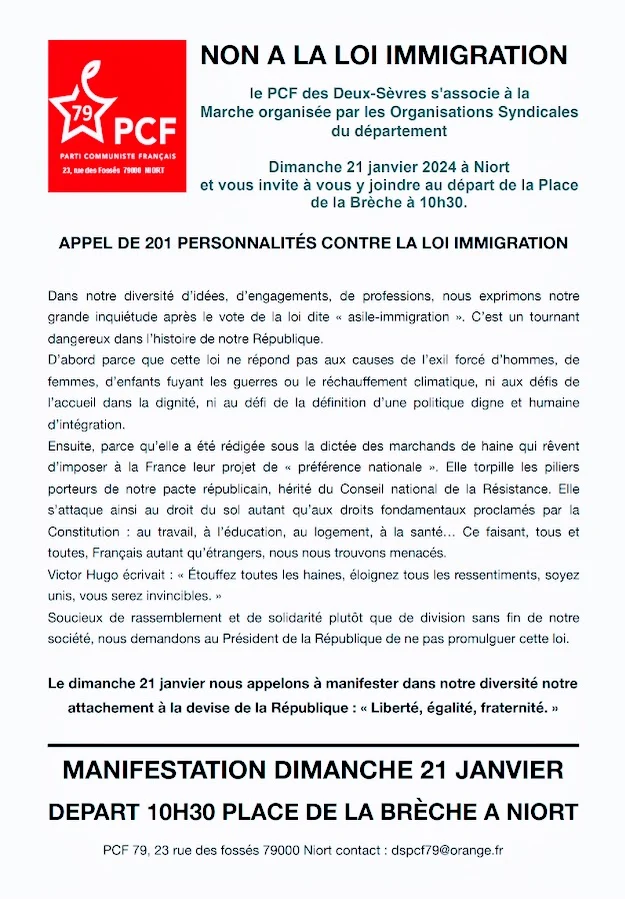

Appel de la fédération
Contre la loi immigration. Notre appel à manifester à Niort
Date indiquée par Facebook · 17 janvier 2024
Repères éditoriaux
Nous avons appelé à rejoindre la manifestation du 21 janvier à 10 h 30, place de la Brèche. Les deux documents conservent l’appel de la fédération et l’affiche de la mobilisation.
Texte conservé avec la publication
NON A LA LOI IMMIGRATION
Le PCF des Deux-Sèvres s'associe à la Marche organisée par les organisations syndicales du département
DIMANCHE 21 JANVIER 2024 A NIORT
Départ de la Place de la Brèche à 10h30

Sources
Archive rouge · export Facebook · AR-0002-FB-01498
À lire aussi · À Niort, nous avons marché contre la loi immigration le 21 janvier